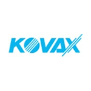
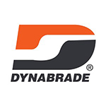
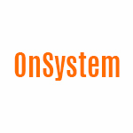
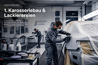
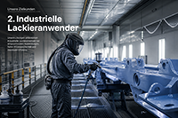
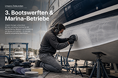
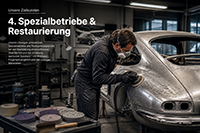

Wir liefern österreichischen Profis Schleifmittel und Lacktechnik der höchsten Klasse — und zwar mit der Beratung, die zwischen ordentlicher Arbeit und exzellenter Arbeit den Unterschied macht.
…und das Material, mit dem er arbeitet. Ein falsch gewähltes Schleifmittel kostet Stunden. Ein richtig gewähltes spart Tage.
Mit Sitz in Rohrbach bei Mattersburg führen wir die Premium-Marken der internationalen Schleifmittel- und Lacktechnik. Aber das ist nur die halbe Miete: Was wir mitliefern, ist Praxiswissen.
Was uns trägt
Fachberatung
Vor Ort, am Telefon, im Werkstattgespräch.
Prompte Lieferung
In ganz Österreich, ohne Umwege.
Tiefe Marken-Auswahl
KOVAX, MIRKA, DYNABRADE, RUPES, OnSystem.
Franz führt die Frei Schleifmittel GmbH seit ihrer Gründung. Aber wer ihn nur als Geschäftsführer eines Handelsbetriebes sieht, übersieht das Wesentliche.
Er ist Regattagewinner, ISSA-zertifizierter Skipper-Trainer und betreibt parallel eine eigene Segelschule in Kroatien. Zehn Jahre Ausbildungserfahrung auf dem Wasser — und das ist nicht nebenher: das ist seine zweite Schule der Präzision.
Im Mikron entscheidet sich, ob die Lackierung perfekt wird. In der Regatta entscheiden Sekunden über Sieg und Niederlage. Beides verlangt das Gleiche: Präzision als Haltung. — Franz Reischer · Demo-Zitat, finale Formulierung folgt
Was Franz auf dem Wasser zum Sieger macht, ist exakt das, was er beim Materialeinkauf seiner Kunden voraussetzt. Detailgenauigkeit, Materialgefühl, Vorbereitung.

KOVAX Japanische Schleifmittel-Präzision für Lackierer und Karosseriebau. Japan
DYNABRADE Hochleistungs-Druckluftwerkzeuge für industrielle Anwendung. USA
OnSystem Spezial-Schleiflösungen für Industrieumgebungen. IndustrieWir kennen die Materialien, die wir verkaufen, weil wir wissen, wo sie eingesetzt werden. Anrufen, fragen, Antwort bekommen — keine Schleife durch ein Callcenter.
Burgenland, Wien, Niederösterreich, Steiermark und darüber hinaus. Was am Vormittag bestellt wird, ist meistens am nächsten Werktag in eurer Werkstatt.
Franz Reischer ist Regattaskipper und ISSA-Trainer. Wer in der Praxis lehrt, versteht, was Praktiker brauchen — auch wenn das Material nicht aufs Wasser geht.
Die größte Kundengruppe. Vom Einzelbetrieb bis zur Filiale eines markengebundenen Reparaturnetzwerks. Wir wissen, was eure Lacksysteme verlangen.

Möbelindustrie, Komponentenhersteller, Beschichtungsbetriebe. Wo Großserien gefahren werden, zählt Standfestigkeit des Schleifmittels — und genau die liefern unsere Marken.

Spezialgebiet — und einer, in dem Franz aus eigener Erfahrung weiß, was am Boot wirklich gebraucht wird. Antifouling-Vorbereitung bis Yacht-Lackierung.

Oldtimer-Werkstätten, Möbelrestaurierung, Spezialhandwerk. Hier zählt nicht Volumen, sondern Materialkenntnis. Genau dort sind wir stark.

Wir glauben nicht an Aufdringlichkeit. Wer mit uns ins Geschäft kommt, tut das, weil wir nützlich sind. So sieht ein Erstkontakt aus.
Telefonisch oder vor Ort. Ihr erzählt, womit ihr arbeitet und wo es klemmt. Wir hören zu und sagen, ob wir helfen können — ehrlich, auch wenn die Antwort manchmal "Nein" ist.
Ihr testet ein konkretes Produkt unter euren Bedingungen. Bei größeren Betrieben kommt Franz oder ein Mitarbeiter persönlich vorbei. Kostenlos.
Wenn das Material passt, machen wir die Konditionen klar und liefern. Ab dann gibt es uns als Ansprechpartner — ohne Wartezeiten, ohne Hotlines.
Diese Präsentation ist als Demo entworfen, basierend auf öffentlich recherchierbaren Informationen über Frei Schleifmittel und Frei Segeln. Sie zeigt, wie die finale Unternehmenspräsentation aufgebaut sein könnte — visuell, sprachlich und narrativ.
Mit dem ausgefüllten Briefing-Dokument und eurem Bildmaterial entsteht in zwei bis drei Wochen die finale Präsentation — auf Deutsch und Englisch, als Premium-PDF und als interaktive Web-Version.